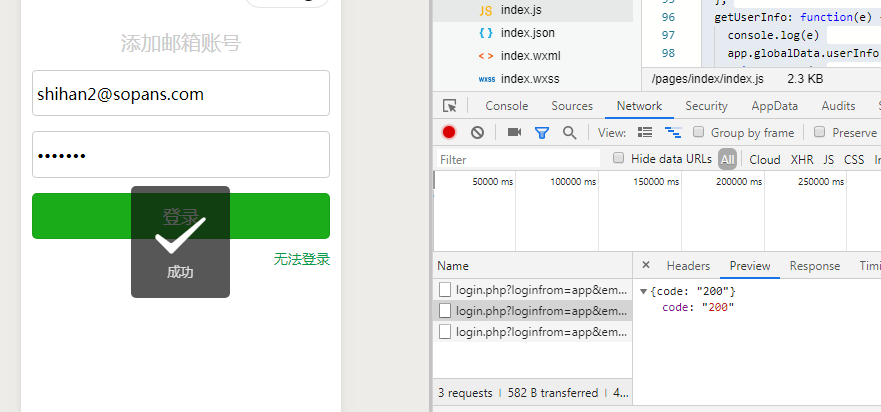

1. 获取输入框数据
wxml中的input上增加bindinput属性，和方法值
在js部分定义与之对应的方法，只要在输入的时候，数据就会绑定调用到该方法，存入data属性变量中
2. 调用get请求发起网络请求
调用wx.request发起网络请求
3.调用微信Toast接口展示结果
4.按钮绑定bindtap属性，当按钮点击的时候会调用对应的方法
index.wxml部分
<view class="indexInput">
<input maxlength="100" bindinput="getEmail" placeholder="邮箱地址" />
</view>
<view class="indexInput">
<input password maxlength="30" bindinput="getPasswd" placeholder="密码" />
</view>
<view class="indexButton">
<button type="primary" bindtap="checkLogin" loading="{{loading}}"> 登录 </button>
</view>index.js部分
//index.js
//获取应用实例
const app = getApp()
Page({
data: {
email:"",
passwd:"",
},
onLoad: function () {
},
//获取输入框数据
getEmail:function(e){
this.setData({
email: e.detail.value
})
},
//获取输入框数据
getPasswd: function (e) {
this.setData({
passwd: e.detail.value
})
},
/*
* 验证用户名密码是否正确
*/
checkLogin:function(){
var email=this.data.email;
var passwd = this.data.passwd;
var data={
loginfrom:"app",
email: email,
psw: passwd,
output: "json"
};
var url = "https://api.sopans.com/third/login.php";
wx.request({
url: url,
method: 'GET',
data: data,
header: {
'Content-Type': 'application/json'
},
success(res) {
if(res.data.code=200){
wx.showToast({
title: '成功',
icon: 'success',
duration: 2000
})
}
}
});
}
})